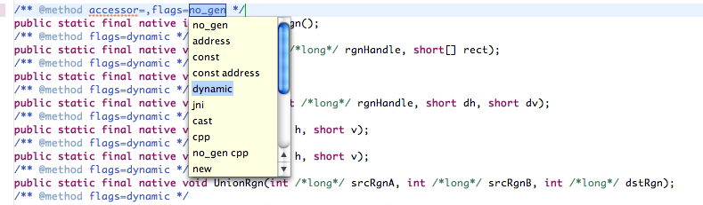

Generating the SWT JNI Code
All of the C code used by SWT is generated by the JNIGeneratorApp application included in the SWT Tools bundle and available on the Update Sites. This page describes how to use this tool when fixing bugs or adding features to SWT.
Adding native methods
- Add the function prototype in OS.java, copying the style and structure of the other functions in that file. Note that for Mac/Cocoa, portions of OS.java are also generated.
- Install the latest SWT Tools from the Update Site.
- Restart Eclipse.
- Use code assist templates like jni* (i.e. jnifield and jnimethod) to add javadoc tags that describe flags and casts for any primitive types. See metadata for more documentation.
 - Save the file. This should build the appropriate C files.
- Compile the new C code and copy the new libraries to the appropriate fragment. Steps:
- right-click on the build.xml file of the appropriate fragment (i. e. org.eclipse.swt.<ws>.<os>.<arch>) depending on the os, platform and architecture being built
- select "Run As -> Ant Build..."
- on the Targets tab check the build_libraries target
- on the JRE tab select "Run in the same JRE as the workspace"
- on the Refresh tab check "Refresh resources upon completion" to refresh your workspace after running the build; this ensures that Eclipse will pick up the fresh binaries
- press the "Run" button to begin
Adding structs
Often, methods return values or require parameters as a C struct. To add a new structure, simply add a new class in the same package as the OS.java file which matches the definition of the C structure. This will be picked up and correctly handled by JNIGeneratorApp.
If a struct is input-only or output-only, this information can be used by JNIGeneratorApp to generate more efficient C code. Use the flags attribute of the native function to indicate this in the metadata.
More Hints
- For GTK+ and Motif, all native functions must be wrapped in locking code. When adding functions, simply copy the style and structure of the other native functions.
- Many functions on Mac OS X return structs which use unions. For an example of how to add the markup for a union, see the ControlFontStyleRec structure and its metadata.
And there you go! If you're having trouble, please post to the SWT mailing list or file a new bug in bugzilla.